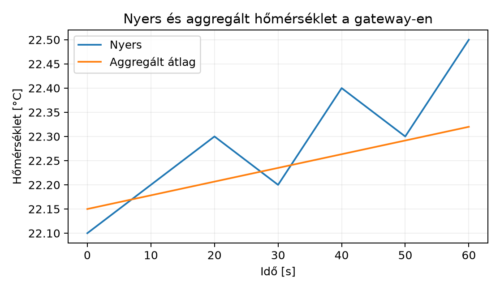

A TerraSense üvegházban a ts-node másodpercenként vagy
akár gyakrabban küld mérési adatot a ts-gw gateway-nek. A
gateway feladata nem csak a protokollfordítás: ha minden nyers mintát
azonnal továbbítana MQTT-n a felhőbe, az uplink folyamatosan terhelt
lenne, a mobil adatkeret hamar elfogyna, és a backend is nagyobb
számítási kapacitást igényelne. Ugyanakkor a felhasználót nem
feltétlenül érdekli, hogy a hőmérséklet 22,1 °C-ról 22,2 °C-ra
változott; elég, ha a jelentős változásról azonnal értesül, a lassú
trendről pedig percenkénti összegzést kap. A gateway ezért ideális hely
a helyi feldolgozásra: közel van az eszközökhöz, rendelkezik számítási
kapacitással, és csökkentheti a felhőbe küldött adatmennyiséget,
miközben a kritikus riasztások késleltetését alacsonyan tartja.
Definíció. A deadband (holtsáv) olyan szűrési szabály, amely szerint egy új mérési értéket csak akkor továbbítunk, ha az utolsó továbbított értéktől legalább egy előre megadott abszolút küszöbértékkel eltér. Ha az eltérés kisebb, az értéket eldobjuk vagy egy későbbi aggregálásba gyűjtjük.
Példa: ha a hőmérséklet-deadband 0,5 °C, akkor a 22,0 °C után csak akkor küldünk új értéket, ha a hőmérséklet 21,5 °C alá csökken vagy 22,5 °C fölé emelkedik. Ez a mechanizmus C++-ban egyszerűen egy előző-érték tárolással valósítható meg.
Egy gatewayen egyszerre több eszköz és több mérésfajta van, ezért a
holtsáv állapotát nem elég egyetlen globális „utolsó értékben” tárolni.
A laborban a szűrő eszközönként és mérésfajtánként külön tartja az
utolsó továbbított értéket és annak időbélyegét: a hőmérséklet holtsávja
0,5 °C, a relatív páratartalomé 2 %RH, a talajnedvességé 1%. Egy minta
akkor kerül továbbításra, ha valamelyik mérésfajta első értéke
megérkezik, a saját holtsávjánál nagyobbat változik, vagy lejár a saját
maximális hallgatási ideje (heartbeat). A heartbeat akkor is továbbít,
ha az érték egyáltalán nem változott, így a backend a lassú vagy állandó
folyamatokról is kap életjelet. A döntés indokát a modul mérésfajtánként
naplózza, például deadband:temperature vagy
heartbeat:soil_moisture; a tényleges MQTT-üzenet továbbra
is egyetlen telemetria-minta, amely az összes rendelkezésre álló
mérésfajtát tartalmazza. Fontos, hogy a deadband csak az azonnali
továbbítást szűri: az ablakos aggregálás a nem továbbított nyers
mintákat is feldolgozza, különben a minimum, a maximum és az átlag
torzulna.
A hiszterézis (hysteresis) ennek általánosítása: a be- és kikapcsolási küszöb nem ugyanaz. Például egy fűtési riasztásnál a magas hőmérséklet riasztást 30,0 °C felett vált ki, de a riasztás csak 28,0 °C alatt szűnik meg. Ezzel elkerüljük, hogy az érték a küszöb körül lebegve másodpercenként kapcsolgassa a riasztást, ami zajos telemetriát és felesleges értesítéseket okozna.
Definíció. Az ablakos aggregálás során a beérkező mintákat időablakokba csoportosítjuk, és minden ablak végén egyetlen összegző üzenetet küldünk, amely statisztikai jellemzőket tartalmaz: minimum, maximum, átlag, esetleg szórás vagy minta darabszám.
Két fő ablaktípust különböztetünk meg:
A TerraSense gateway-ben az első változatban tumbling ablakot használunk: 60 másodperces ablakban számolunk minimumot, maximumot és átlagot.
Az ablak határait nem a feldolgozás pillanata, hanem a minta
eseményideje (ts, epoch ms, UTC) jelöli ki. Az ablak
azonosítója a
window_start = floor(ts / window_ms) * window_ms érték, az
intervallum pedig fél-nyílt:
[window_start, window_start + window_ms). Ezért a 60.
másodpercben érkező minta már a következő, [60 s, 120 s)
ablakba tartozik, nem az előző utolsó elemeként. Az ablak lezárását egy
vízjel vezérli: a legnagyobb látott eseményidő mínusz a megengedett
késés (allowed_lateness_ms). Ha egy ablak vége a vízjel alá
esik, az ablak lezárul; a már lezárt ablakba érkező minta késői adat,
amelyet a modul eldob és külön számlál. Azok az időszakok, amelyekben
egyáltalán nincs minta, nem hoznak létre üres aggregátumot: a következő
minta a saját, eseményidő szerinti ablakát nyitja meg. Leállításkor a
flush_all() a még nyitott, részleges ablakokat is kiadja,
és final_window jelöléssel látja el, hogy a fogyasztó meg
tudja különböztetni a vízjel miatt lezárt ablaktól.
Definíció. A helyi riasztás olyan, a gateway-en futó szabály, amely a bejövő mérési értékekből azonnal, felhő-kapcsolat nélkül is képes döntést hozni, és állapotváltozást jelezni. A riasztás lehet:
A laborban a küszöb- és időtartam-alapú riasztás négyállapotú
állapotgépet használ: NORMAL, PENDING,
ALERTING és RECOVERING. A magas küszöb
elérésekor a riasztás PENDING állapotba kerül, és csak
akkor vált ALERTING állapotba, ha a magas érték az
activate_after_ms ideig folyamatosan fennáll. Ha a jel a
várakozás közben a magas küszöb alá esik, a PENDING állapot
megszűnik, tehát egy rövid kiugrás nem vált ki riasztást. Az
ALERTING állapotból az alacsony küszöb elérése
RECOVERING állapotba visz; innen csak akkor lesz ismét
NORMAL, ha az érték a recover_after_ms ideig
folyamatosan az alacsony küszöb alatt marad. Ha közben az alacsony
küszöb fölé emelkedik, a riasztás visszatér ALERTING
állapotba. A min_duration tehát nem csak a kikapcsolást
késlelteti: a bekapcsoláshoz is tartós küszöbátlépés kell, a hiszterézis
pedig a két küszöb közötti sávban megakadályozza a lebegést.
Ezek a riasztások a TerraSense-ben a
terrasense/<site>/<node>/state retained topicra
kerülnek, hogy a backend és a felhasználói felület is lássa a jelenlegi
állapotot.
Az alábbi táblázat azt foglalja össze, mikor érdemes a feldolgozást a gateway-en végezni a nyers felhőbe küldés helyett.
| Szempont | Nyers adat felhőbe | Deadband | Ablakos aggregálás |
|---|---|---|---|
| Sávszélesség-igény | Magas | Közepes | Alacsony |
| Információvesztés | Nincs | Kicsi (küszöb alatti változás) | Nagyobb (részletek elvesznek) |
| Riasztási késleltetés | Alacsony | Alacsony | Akár az ablak hossza |
| Tárolási költség | Magas | Közepes | Alacsony |
| Gateway CPU-terhelés | Alacsony | Alacsony | Közepes |
| Tipikus felhasználás | Hibakeresés, kalibráció | Hirtelen változások | Trend, élettartam, költség |
A TerraSense-ben a telemetria-topicra a deadband-szűrt azonnali értékek és a percenkénti aggregátumok is felkerülnek, de eltérő séma-mezőkkel; a részleteket az Adatformátumok: JSON, CBOR, Protocol Buffers, SenML alfejezet rögzíti.
Tegyük fel, hogy a ts-node 10 másodpercenként küld egy
nyers telemetria-üzenetet, amelynek mérete JSON-ban 86 B. A gateway
deadband-szűrést és 60 másodperces tumbling ablakot alkalmaz. Az
aggregált üzenet – amely tartalmazza a minimumot, maximumot és átlagot –
mérete 96 B, mert több mező van benne, de csak percenként egy ilyen
üzenet keletkezik.
Jelölje:
A naponta küldött üzenetek száma nyers esetben:
A napi nyers adatmennyiség:
Az aggregálással percenként egy üzenet keletkezik, tehát naponta:
A napi aggregált adatmennyiség:
A megtakarítás:
Tehát a gateway-en végzett ablakos aggregálás körülbelül
81,4% sávszélesség-megtakarítást eredményez.
Természetesen az információ egy része elvész: a percen belüli
ingadozások csak a minimum- és maximumértékben jelennek meg, az átlag
ezeket elrejti. Ezért az aggregátumboz mindig érdemes csatolni a
min és max mezőket is.
Az alábbi ábra illusztrálja a nyers és az aggregált adat megjelenését.

ts-gw-benMunkakönyvtár:
mkdir -p ~/iot-labor/i039 && cd ~/iot-labor/i039Ebben a laborban egy önálló, külső könyvtáraktól mentes C++17 modult
készítünk, amelyet a ts-gw későbbi változata a
Normalizer után, a JSON-szerializálás és a spool elé
illeszthet. A mintákat a Sample struktúra reprezentálja: a
site, node_id, boot_id,
seq és ts mellett a három mérésfajta
std::optional<double> mezőként szerepel, mert egy
eszköz egy adott körben nem feltétlenül küld minden értéket. A modul
három alaposztálya a DeadbandFilter, a
TumblingWindowAggregator és a ThresholdAlert;
ezeket az EdgeAggregator fogja össze, amely eszközönként
külön szűrő-, ablak- és riasztásállapotot tart. A kód teljes: nem függ
Paho-tól, SQLite-tól, systemd-től vagy más külső könyvtártól, ezért
önállóan fordítható és futtatható.
A labor konfigurációja: hőmérséklet-deadband 0,5 °C,
páratartalom-deadband 2 %RH, talajnedvesség-deadband 1%, heartbeat 60 s,
ablakhossz 60 s, megengedett késés 5 s, riasztási magas küszöb 30 °C,
alacsony küszöb 28 °C, aktiválási és feloldási idő 300 s. A
main.cpp három, egymástól jól elkülöníthető demonstrációt
futtat: a teljes pipeline-t két eszközzel, az eseményidő-ablakot késői
adattal, valamint a riasztás állapotgépét.
Fájl: edge_aggregator.h
#pragma once
#include <cstdint>
#include <map>
#include <optional>
#include <string>
#include <vector>
namespace terrasense {
struct Sample {
std::string site;
std::string node_id;
std::uint32_t boot_id{0};
std::uint32_t seq{0};
std::uint64_t ts{0}; // epoch ms, UTC
std::optional<double> temperature; // °C
std::optional<double> humidity; // %RH
std::optional<double> soil_moisture; // %
};
struct MetricAggregate {
double min{0.0};
double max{0.0};
double avg{0.0};
std::uint32_t count{0};
};
struct AggregatedSample {
std::string site;
std::string node_id;
std::uint64_t window_start{0};
std::uint64_t window_end{0};
std::uint32_t sample_count{0};
bool final_window{false}; // flush_all() zárta le, nem vízjel
MetricAggregate temperature;
MetricAggregate humidity;
MetricAggregate soil_moisture;
};
struct DeadbandConfig {
double temperature{0.5};
double humidity{2.0};
double soil_moisture{1.0};
std::uint64_t heartbeat_ms{60000};
};
struct FilterResult {
bool forward{false};
std::vector<std::string> reasons;
};
class DeadbandFilter {
public:
explicit DeadbandFilter(const DeadbandConfig& config);
// Mérésfajtánként dönt: változás, első érték vagy heartbeat esetén jelez.
FilterResult update(const Sample& sample);
private:
enum class Metric { kTemperature = 0, kHumidity = 1, kSoilMoisture = 2 };
double threshold(Metric metric) const;
static const char* metric_name(Metric metric);
void check(Metric metric, const std::optional<double>& value,
std::uint64_t ts, FilterResult& result);
struct LastValue {
bool valid{false};
double value{0.0};
std::uint64_t forwarded_ts{0};
};
DeadbandConfig config_;
LastValue last_[3];
};
class TumblingWindowAggregator {
public:
TumblingWindowAggregator(std::uint64_t window_ms,
std::uint64_t allowed_lateness_ms);
// A mintát az eseményideje szerinti fél-nyílt [start, end) ablakba teszi.
// Visszatér a lezárt ablakokkal, a vízjel a legnagyobb látott eseményidő
// mínusz a megengedett késés.
std::vector<AggregatedSample> add(const Sample& sample);
std::vector<AggregatedSample> flush_all();
std::uint64_t late_dropped() const { return late_dropped_; }
private:
struct Accumulator {
bool has_value{false};
double min{0.0};
double max{0.0};
double sum{0.0};
std::uint32_t count{0};
void add(double value);
MetricAggregate finish() const;
};
struct Window {
AggregatedSample meta;
Accumulator temperature;
Accumulator humidity;
Accumulator soil_moisture;
};
std::vector<AggregatedSample> close_ready();
std::uint64_t window_ms_;
std::uint64_t allowed_lateness_ms_;
std::uint64_t max_seen_ts_{0};
std::uint64_t closed_before_{0};
bool has_seen_{false};
std::uint64_t late_dropped_{0};
std::map<std::uint64_t, Window> windows_;
};
enum class AlertState { NORMAL, PENDING, ALERTING, RECOVERING };
const char* alert_state_name(AlertState state);
struct AlertEvent {
AlertState from{AlertState::NORMAL};
AlertState to{AlertState::NORMAL};
std::uint64_t ts{0};
std::string reason;
};
struct AlertConfig {
double high{30.0};
double low{28.0};
std::uint64_t activate_after_ms{300000};
std::uint64_t recover_after_ms{300000};
};
class ThresholdAlert {
public:
explicit ThresholdAlert(const AlertConfig& config);
// Csak állapotváltozáskor ad eseményt. A tartós magas állapotot az
// aktiválás előtt, a tartós alacsony állapotot a feloldás előtt méri.
std::optional<AlertEvent> update(const Sample& sample);
AlertState state() const { return state_; }
bool is_active() const {
return state_ == AlertState::ALERTING ||
state_ == AlertState::RECOVERING;
}
private:
AlertConfig config_;
AlertState state_{AlertState::NORMAL};
std::uint64_t candidate_since_{0};
};
struct AggregatorConfig {
DeadbandConfig deadband;
std::uint64_t window_ms{60000};
std::uint64_t allowed_lateness_ms{5000};
AlertConfig alert;
};
class EdgeAggregator {
public:
explicit EdgeAggregator(const AggregatorConfig& config);
struct Result {
std::string device;
bool forwarded{false};
std::vector<std::string> reasons;
std::vector<AggregatedSample> completed_windows;
std::optional<AlertEvent> alert_event;
};
// Eszközönként külön deadband-, ablak- és riasztásállapotot tart.
Result process(const Sample& sample);
std::vector<AggregatedSample> flush_all();
std::uint64_t late_dropped(const std::string& device) const;
private:
struct DeviceState {
explicit DeviceState(const AggregatorConfig& config)
: filter(config.deadband),
windows(config.window_ms, config.allowed_lateness_ms),
alert(config.alert) {}
DeadbandFilter filter;
TumblingWindowAggregator windows;
ThresholdAlert alert;
};
static std::string device_key(const Sample& sample);
AggregatorConfig config_;
std::map<std::string, DeviceState> devices_;
};
} // namespace terrasenseFájl: edge_aggregator.cpp
#include "edge_aggregator.h"
#include <algorithm>
#include <cmath>
#include <stdexcept>
#include <utility>
namespace terrasense {
DeadbandFilter::DeadbandFilter(const DeadbandConfig& config)
: config_(config) {
if (config_.temperature < 0.0 || config_.humidity < 0.0 ||
config_.soil_moisture < 0.0) {
throw std::invalid_argument("deadband threshold must be non-negative");
}
if (config_.heartbeat_ms == 0) {
throw std::invalid_argument("heartbeat_ms must be positive");
}
}
double DeadbandFilter::threshold(Metric metric) const {
switch (metric) {
case Metric::kTemperature:
return config_.temperature;
case Metric::kHumidity:
return config_.humidity;
case Metric::kSoilMoisture:
return config_.soil_moisture;
}
return 0.0;
}
const char* DeadbandFilter::metric_name(Metric metric) {
switch (metric) {
case Metric::kTemperature:
return "temperature";
case Metric::kHumidity:
return "humidity";
case Metric::kSoilMoisture:
return "soil_moisture";
}
return "unknown";
}
void DeadbandFilter::check(Metric metric, const std::optional<double>& value,
std::uint64_t ts, FilterResult& result) {
if (!value.has_value() || !std::isfinite(*value)) {
return;
}
LastValue* last_ptr = nullptr;
switch (metric) {
case Metric::kTemperature:
last_ptr = &last_[0];
break;
case Metric::kHumidity:
last_ptr = &last_[1];
break;
case Metric::kSoilMoisture:
last_ptr = &last_[2];
break;
}
if (last_ptr == nullptr) {
return;
}
LastValue& last = *last_ptr;
if (!last.valid) {
last = LastValue{true, *value, ts};
result.forward = true;
result.reasons.push_back(std::string("first:") + metric_name(metric));
return;
}
const double delta = std::fabs(*value - last.value);
if (delta >= threshold(metric)) {
last = LastValue{true, *value, ts};
result.forward = true;
result.reasons.push_back(std::string("deadband:") + metric_name(metric));
return;
}
if (ts >= last.forwarded_ts && ts - last.forwarded_ts >=
config_.heartbeat_ms) {
last = LastValue{true, *value, ts};
result.forward = true;
result.reasons.push_back(std::string("heartbeat:") + metric_name(metric));
}
}
FilterResult DeadbandFilter::update(const Sample& sample) {
FilterResult result;
check(Metric::kTemperature, sample.temperature, sample.ts, result);
check(Metric::kHumidity, sample.humidity, sample.ts, result);
check(Metric::kSoilMoisture, sample.soil_moisture, sample.ts, result);
return result;
}
void TumblingWindowAggregator::Accumulator::add(double value) {
if (!has_value) {
has_value = true;
min = value;
max = value;
} else {
min = std::min(min, value);
max = std::max(max, value);
}
sum += value;
++count;
}
MetricAggregate TumblingWindowAggregator::Accumulator::finish() const {
MetricAggregate out;
if (!has_value || count == 0) {
return out;
}
out.min = min;
out.max = max;
out.avg = sum / static_cast<double>(count);
out.count = count;
return out;
}
TumblingWindowAggregator::TumblingWindowAggregator(
std::uint64_t window_ms, std::uint64_t allowed_lateness_ms)
: window_ms_(window_ms), allowed_lateness_ms_(allowed_lateness_ms) {
if (window_ms_ == 0) {
throw std::invalid_argument("window_ms must be positive");
}
}
std::vector<AggregatedSample> TumblingWindowAggregator::add(
const Sample& sample) {
if (sample.site.empty() || sample.node_id.empty()) {
throw std::invalid_argument("sample site and node_id must be set");
}
const std::uint64_t window_start =
(sample.ts / window_ms_) * window_ms_;
if (has_seen_ && window_start < closed_before_) {
++late_dropped_;
return {};
}
if (!has_seen_ || sample.ts > max_seen_ts_) {
max_seen_ts_ = sample.ts;
}
has_seen_ = true;
Window& window = windows_[window_start];
if (window.meta.sample_count == 0) {
window.meta.site = sample.site;
window.meta.node_id = sample.node_id;
window.meta.window_start = window_start;
window.meta.window_end = window_start + window_ms_;
}
++window.meta.sample_count;
if (sample.temperature.has_value() &&
std::isfinite(*sample.temperature)) {
window.temperature.add(*sample.temperature);
}
if (sample.humidity.has_value() && std::isfinite(*sample.humidity)) {
window.humidity.add(*sample.humidity);
}
if (sample.soil_moisture.has_value() &&
std::isfinite(*sample.soil_moisture)) {
window.soil_moisture.add(*sample.soil_moisture);
}
return close_ready();
}
std::vector<AggregatedSample> TumblingWindowAggregator::close_ready() {
std::vector<AggregatedSample> result;
const std::uint64_t watermark =
max_seen_ts_ >= allowed_lateness_ms_
? max_seen_ts_ - allowed_lateness_ms_
: 0;
for (auto it = windows_.begin(); it != windows_.end();) {
Window& window = it->second;
if (window.meta.window_end > watermark) {
++it;
continue;
}
window.meta.temperature = window.temperature.finish();
window.meta.humidity = window.humidity.finish();
window.meta.soil_moisture = window.soil_moisture.finish();
closed_before_ = std::max(closed_before_, window.meta.window_end);
result.push_back(window.meta);
it = windows_.erase(it);
}
return result;
}
std::vector<AggregatedSample> TumblingWindowAggregator::flush_all() {
std::vector<AggregatedSample> result;
for (auto& entry : windows_) {
Window& window = entry.second;
window.meta.temperature = window.temperature.finish();
window.meta.humidity = window.humidity.finish();
window.meta.soil_moisture = window.soil_moisture.finish();
window.meta.final_window = true;
closed_before_ = std::max(closed_before_, window.meta.window_end);
result.push_back(window.meta);
}
windows_.clear();
return result;
}
const char* alert_state_name(AlertState state) {
switch (state) {
case AlertState::NORMAL:
return "NORMAL";
case AlertState::PENDING:
return "PENDING";
case AlertState::ALERTING:
return "ALERTING";
case AlertState::RECOVERING:
return "RECOVERING";
}
return "UNKNOWN";
}
ThresholdAlert::ThresholdAlert(const AlertConfig& config) : config_(config) {
if (config_.low > config_.high) {
throw std::invalid_argument("alert low threshold must not exceed high");
}
if (config_.activate_after_ms == 0 || config_.recover_after_ms == 0) {
throw std::invalid_argument("alert durations must be positive");
}
}
std::optional<AlertEvent> ThresholdAlert::update(const Sample& sample) {
if (!sample.temperature.has_value() ||
!std::isfinite(*sample.temperature)) {
return std::nullopt;
}
const double value = *sample.temperature;
std::optional<AlertEvent> event;
switch (state_) {
case AlertState::NORMAL:
if (value >= config_.high) {
state_ = AlertState::PENDING;
candidate_since_ = sample.ts;
event = AlertEvent{AlertState::NORMAL, state_, sample.ts,
"magas küszöb elérve"};
}
break;
case AlertState::PENDING:
if (value < config_.high) {
const AlertState from = state_;
state_ = AlertState::NORMAL;
event = AlertEvent{from, state_, sample.ts,
"kiugrás az aktiválás előtt megszűnt"};
} else if (sample.ts >= candidate_since_ &&
sample.ts - candidate_since_ >=
config_.activate_after_ms) {
const AlertState from = state_;
state_ = AlertState::ALERTING;
event = AlertEvent{from, state_, sample.ts,
"magas küszöb tartósan fennáll"};
}
break;
case AlertState::ALERTING:
if (value <= config_.low) {
const AlertState from = state_;
state_ = AlertState::RECOVERING;
candidate_since_ = sample.ts;
event = AlertEvent{from, state_, sample.ts,
"alacsony küszöb elérve"};
}
break;
case AlertState::RECOVERING:
if (value > config_.low) {
const AlertState from = state_;
state_ = AlertState::ALERTING;
event = AlertEvent{from, state_, sample.ts,
"az érték a feloldási küszöb fölé emelkedett"};
} else if (sample.ts >= candidate_since_ &&
sample.ts - candidate_since_ >=
config_.recover_after_ms) {
const AlertState from = state_;
state_ = AlertState::NORMAL;
event = AlertEvent{from, state_, sample.ts,
"a feloldás tartósan fennáll"};
}
break;
}
return event;
}
EdgeAggregator::EdgeAggregator(const AggregatorConfig& config)
: config_(config) {
if (config_.window_ms == 0) {
throw std::invalid_argument("window_ms must be positive");
}
}
std::string EdgeAggregator::device_key(const Sample& sample) {
return sample.site + "/" + sample.node_id;
}
EdgeAggregator::Result EdgeAggregator::process(const Sample& sample) {
if (sample.site.empty() || sample.node_id.empty()) {
throw std::invalid_argument("sample site and node_id must be set");
}
const std::string key = device_key(sample);
auto inserted = devices_.try_emplace(key, config_);
DeviceState& state = inserted.first->second;
Result result;
result.device = key;
const FilterResult filter = state.filter.update(sample);
result.forwarded = filter.forward;
result.reasons = filter.reasons;
result.completed_windows = state.windows.add(sample);
result.alert_event = state.alert.update(sample);
return result;
}
std::vector<AggregatedSample> EdgeAggregator::flush_all() {
std::vector<AggregatedSample> result;
for (auto& entry : devices_) {
auto windows = entry.second.windows.flush_all();
result.insert(result.end(), windows.begin(), windows.end());
}
return result;
}
std::uint64_t EdgeAggregator::late_dropped(const std::string& device) const {
const auto it = devices_.find(device);
if (it == devices_.end()) {
return 0;
}
return it->second.windows.late_dropped();
}
} // namespace terrasenseFájl: main.cpp
#include "edge_aggregator.h"
#include <cstddef>
#include <cstdint>
#include <iomanip>
#include <iostream>
#include <string>
#include <utility>
#include <vector>
using namespace terrasense;
namespace {
constexpr std::uint64_t kStart = 1'700'000'040'000ULL;
std::string join_reasons(const std::vector<std::string>& reasons) {
std::string out;
for (std::size_t i = 0; i < reasons.size(); ++i) {
if (i != 0) {
out += ",";
}
out += reasons[i];
}
return out.empty() ? "-" : out;
}
Sample make_sample(const std::string& site, const std::string& node,
std::uint64_t offset_ms, double temperature,
double humidity, double soil_moisture) {
Sample sample;
sample.site = site;
sample.node_id = node;
sample.boot_id = 7;
sample.seq = static_cast<std::uint32_t>(offset_ms / 10000 + 1);
sample.ts = kStart + offset_ms;
sample.temperature = temperature;
sample.humidity = humidity;
sample.soil_moisture = soil_moisture;
return sample;
}
void print_metric(const char* name, const MetricAggregate& metric) {
std::cout << " " << name << "[n=" << metric.count;
if (metric.count > 0) {
std::cout << " min=" << std::fixed << std::setprecision(1) << metric.min
<< " max=" << metric.max << " avg=" << metric.avg;
}
std::cout << "]\n";
}
void print_window(const AggregatedSample& window) {
std::cout << " ablak " << window.site << "/" << window.node_id << " +"
<< (window.window_start - kStart) / 1000 << "s..+"
<< (window.window_end - kStart) / 1000 << "s"
<< " minták=" << window.sample_count
<< " final=" << (window.final_window ? "igen" : "nem") << "\n";
print_metric("hőmérséklet", window.temperature);
print_metric("páratartalom", window.humidity);
print_metric("talaj", window.soil_moisture);
}
void print_alert(const AlertEvent& event) {
std::cout << " riasztás " << alert_state_name(event.from) << " -> "
<< alert_state_name(event.to) << " +"
<< (event.ts - kStart) / 1000 << "s-nál: " << event.reason << "\n";
}
void print_result(const EdgeAggregator::Result& result,
std::uint64_t offset_ms) {
std::cout << result.device << " +" << offset_ms / 1000
<< "s továbbítás=" << (result.forwarded ? "igen" : "nem")
<< " okok=" << join_reasons(result.reasons) << "\n";
}
void demo_pipeline() {
std::cout << "== pipeline: eszközönkénti deadband, ablak, riasztás ==\n";
AggregatorConfig config;
config.deadband.temperature = 0.5;
config.deadband.humidity = 2.0;
config.deadband.soil_moisture = 1.0;
config.deadband.heartbeat_ms = 60000;
config.window_ms = 60000;
config.allowed_lateness_ms = 5000;
config.alert.high = 30.0;
config.alert.low = 28.0;
config.alert.activate_after_ms = 300000;
config.alert.recover_after_ms = 300000;
EdgeAggregator aggregator(config);
const double temperatures[] = {22.0, 22.1, 22.2, 22.3, 22.4, 22.2};
for (int i = 0; i < 6; ++i) {
const auto offset = static_cast<std::uint64_t>(i) * 10000ULL;
const Sample sample = make_sample("alpha", "n001", offset,
temperatures[i], 55.0, 40.0);
const auto result = aggregator.process(sample);
print_result(result, offset);
for (const auto& window : result.completed_windows) {
print_window(window);
}
}
for (const std::uint64_t offset : {0ULL, 10000ULL}) {
const Sample sample = make_sample("alpha", "n002", offset, 22.0, 55.0,
offset == 0 ? 40.0 : 20.0);
const auto result = aggregator.process(sample);
print_result(result, offset);
for (const auto& window : result.completed_windows) {
print_window(window);
}
}
for (const auto& item : std::vector<std::pair<std::uint64_t, double>>{
{60000ULL, 22.1}, {70000ULL, 23.0}, {80000ULL, 22.4}}) {
const Sample sample = make_sample("alpha", "n001", item.first, item.second,
55.0, 40.0);
const auto result = aggregator.process(sample);
print_result(result, item.first);
for (const auto& window : result.completed_windows) {
print_window(window);
}
if (result.alert_event.has_value()) {
print_alert(*result.alert_event);
}
}
for (const auto& window : aggregator.flush_all()) {
print_window(window);
}
std::cout << "késői adat eldobva: alpha/n001="
<< aggregator.late_dropped("alpha/n001")
<< " alpha/n002=" << aggregator.late_dropped("alpha/n002")
<< "\n";
}
void demo_late_data() {
std::cout << "\n== eseményidő-ablak és késői adat ==\n";
TumblingWindowAggregator aggregator(60000, 5000);
for (int i = 0; i < 6; ++i) {
const auto offset = static_cast<std::uint64_t>(i) * 10000ULL;
const Sample sample = make_sample("alpha", "n003", offset, 20.0, 50.0,
30.0);
for (const auto& window : aggregator.add(sample)) {
print_window(window);
}
}
const Sample at_seventy = make_sample("alpha", "n003", 70000, 21.0, 50.0,
30.0);
for (const auto& window : aggregator.add(at_seventy)) {
print_window(window);
}
const Sample late = make_sample("alpha", "n003", 55000, 99.0, 50.0, 30.0);
for (const auto& window : aggregator.add(late)) {
print_window(window);
}
std::cout << "késői minta +55s-nél: eldobva=" << aggregator.late_dropped()
<< "\n";
const Sample out_of_order = make_sample("alpha", "n003", 68000, 19.0, 50.0,
30.0);
for (const auto& window : aggregator.add(out_of_order)) {
print_window(window);
}
for (const auto& window : aggregator.flush_all()) {
print_window(window);
}
std::cout << "késői adat összesen eldobva=" << aggregator.late_dropped() << "\n";
}
void demo_alert() {
std::cout << "\n== riasztás: NORMAL/PENDING/ALERTING/RECOVERING ==\n";
AlertConfig config;
config.high = 30.0;
config.low = 28.0;
config.activate_after_ms = 300000;
config.recover_after_ms = 300000;
ThresholdAlert alert(config);
const std::vector<std::pair<std::uint64_t, double>> timeline{
{0, 29.0}, {60000, 31.0}, {120000, 31.0}, {180000, 29.0},
{240000, 31.0}, {300000, 31.0}, {360000, 31.0}, {420000, 31.0},
{480000, 31.0}, {540000, 31.0}, {600000, 29.0}, {660000, 27.0},
{720000, 27.0}, {780000, 27.0}, {840000, 27.0}, {900000, 27.0},
{960000, 27.0}};
std::cout << " magas=30 alacsony=28 aktiválás=300s feloldás=300s\n";
for (const auto& entry : timeline) {
Sample sample;
sample.ts = kStart + entry.first;
sample.temperature = entry.second;
const auto event = alert.update(sample);
if (event.has_value()) {
print_alert(*event);
}
}
std::cout << " végállapot=" << alert_state_name(alert.state())
<< " aktív=" << (alert.is_active() ? "igen" : "nem") << "\n";
}
} // namespace
int main() {
demo_pipeline();
demo_late_data();
demo_alert();
return 0;
}Build és futtatás:
g++ -std=c++17 -Wall -Wextra -Wpedantic -Werror -O2 \
-o aggregator_demo edge_aggregator.cpp main.cpp
./aggregator_demoTényleges kimenet. A kódot a szerzői környezetben
GCC 13.3.0-val, C++17 módban lefuttattuk; az alábbi kimenet ebből a
futásból származik, nem becsült érték. A program nem használ
rendszeridőt: a kStart rögzített, szintetikus epoch-érték,
ezért a kimenet ismételhető.
== pipeline: eszközönkénti deadband, ablak, riasztás ==
alpha/n001 +0s továbbítás=igen okok=first:temperature,first:humidity,first:soil_moisture
alpha/n001 +10s továbbítás=nem okok=-
alpha/n001 +20s továbbítás=nem okok=-
alpha/n001 +30s továbbítás=nem okok=-
alpha/n001 +40s továbbítás=nem okok=-
alpha/n001 +50s továbbítás=nem okok=-
alpha/n002 +0s továbbítás=igen okok=first:temperature,first:humidity,first:soil_moisture
alpha/n002 +10s továbbítás=igen okok=deadband:soil_moisture
alpha/n001 +60s továbbítás=igen okok=heartbeat:temperature,heartbeat:humidity,heartbeat:soil_moisture
alpha/n001 +70s továbbítás=igen okok=deadband:temperature
ablak alpha/n001 +0s..+60s minták=6 final=nem
hőmérséklet[n=6 min=22.0 max=22.4 avg=22.2]
páratartalom[n=6 min=55.0 max=55.0 avg=55.0]
talaj[n=6 min=40.0 max=40.0 avg=40.0]
alpha/n001 +80s továbbítás=igen okok=deadband:temperature
ablak alpha/n001 +60s..+120s minták=3 final=igen
hőmérséklet[n=3 min=22.1 max=23.0 avg=22.5]
páratartalom[n=3 min=55.0 max=55.0 avg=55.0]
talaj[n=3 min=40.0 max=40.0 avg=40.0]
ablak alpha/n002 +0s..+60s minták=2 final=igen
hőmérséklet[n=2 min=22.0 max=22.0 avg=22.0]
páratartalom[n=2 min=55.0 max=55.0 avg=55.0]
talaj[n=2 min=20.0 max=40.0 avg=30.0]
késői adat eldobva: alpha/n001=0 alpha/n002=0
== eseményidő-ablak és késői adat ==
ablak alpha/n003 +0s..+60s minták=6 final=nem
hőmérséklet[n=6 min=20.0 max=20.0 avg=20.0]
páratartalom[n=6 min=50.0 max=50.0 avg=50.0]
talaj[n=6 min=30.0 max=30.0 avg=30.0]
késői minta +55s-nél: eldobva=1
ablak alpha/n003 +60s..+120s minták=2 final=igen
hőmérséklet[n=2 min=19.0 max=21.0 avg=20.0]
páratartalom[n=2 min=50.0 max=50.0 avg=50.0]
talaj[n=2 min=30.0 max=30.0 avg=30.0]
késői adat összesen eldobva=1
== riasztás: NORMAL/PENDING/ALERTING/RECOVERING ==
magas=30 alacsony=28 aktiválás=300s feloldás=300s
riasztás NORMAL -> PENDING +60s-nál: magas küszöb elérve
riasztás PENDING -> NORMAL +180s-nál: kiugrás az aktiválás előtt megszűnt
riasztás NORMAL -> PENDING +240s-nál: magas küszöb elérve
riasztás PENDING -> ALERTING +540s-nál: magas küszöb tartósan fennáll
riasztás ALERTING -> RECOVERING +660s-nál: alacsony küszöb elérve
riasztás RECOVERING -> NORMAL +960s-nál: a feloldás tartósan fennáll
végállapot=NORMAL aktív=nemA kimenet első részében az alpha/n001 első mintája
mindhárom mérésfajtát továbbítja. A +10 s és +50 s közötti kis
változások egyik holtsávot sem érik el, ezért nem kerülnek ki. A +60
s-os minta három heartbeat indokot ad: 60 s telt el az
előző továbbítás óta, tehát akkor is megy életjel, ha az érték nem
változott. A +70 s-en a 23,0 °C már 0,9 °C-kal tér el az utolsó
továbbított 22,1 °C-tól, ezért deadband:temperature; a +80
s-en a 22,4 °C a 23,0 °C-hoz képest 0,6 °C-kal csökken, ezért ismét
továbbítódik. Ez a H158-ban hiányolt, 23,0 °C utáni 22,4 °C-os
deadband-továbbítás.
Az alpha/n002 külön eszközállapotot kap: a +10 s-en csak
a talajnedvesség változik 40%-ról 20%-ra, ezért csak
deadband:soil_moisture szerepel az okok között. Ez mutatja,
hogy az n001 hőmérséklet-állapota és az n002
talajnedvesség-állapota nem keveredik össze. Az alpha/n001
0–60 s ablakában 6 minta van, a hőmérséklet minimuma 22,0 °C, maximuma
22,4 °C, átlaga 22,2 °C. A minimum azért 22,0 és nem 0,0, mert az
Accumulator az első tényleges értékből inicializál, a
mérésfajtánkénti darabszám pedig külön számolódik. A 60–120 s ablak a
+80 s utáni flush_all() hívásból kerül ki, ezért
final=igen; ez a részleges ablak a leállítási szabályt
szemlélteti.
Az eseményidő-ablakos részben a +70 s-os minta vízjele zárja le a
0–60 s ablakot, mert a megengedett késés 5 s. A +55 s-os késői minta már
nem fér bele a lezárt ablakba: a modul eldobja, és a
late_dropped számlálót 1-re növeli. A +68 s-os minta
viszont még a nyitott 60–120 s ablakba kerül, tehát rendezetlen
érkezésű, de nem késői adat; a végső, kétmintás ablakot itt is a
flush_all() adja ki final=igen jelöléssel.
A riasztási részben a +60 s-os 31 °C rövid kiugrás csak
PENDING állapotot indít; a +180 s-os 29 °C visszaállítja
NORMAL állapotba, tehát nem lesz riasztás. A +240 s-től
tartósan 31 °C következik, és az aktiválási idő letelte után, +540 s-nál
vált ALERTING állapotba. A +660 s-os 27 °C
RECOVERING állapotot indít, amely a feloldási idő
leteltével, +960 s-nál tér vissza NORMAL állapotba. A +600
s-os 29 °C a két küszöb között van, ezért az ALERTING
állapotot nem szünteti meg: ez a hiszterézis működése.
Integráció a ts-gw-be. A
Normalizer::parse által előállított
TelemetrySample mezőit kell a Sample
struktúrába átmásolni, majd az EdgeAggregator::process
hívását a spoolba írás előtt elvégezni. A forwarded jelzésű
minták a meglévő
terrasense/<site>/<node>/telemetry útvonalon, a
szokásos JSON-szerializálással és spool-lal mennek tovább. A
completed_windows elemei ugyanerre a telemetria-topicra
kerülhetnek agg objektummal; a final_window
mezőt a fogyasztónak érdemes továbbítania, hogy meg tudja különböztetni
a részleges záróablakot. Az alert_event alapján a
terrasense/<site>/<node>/state retained topicra
kerülhet a local_alert állapot. A teljes ts-gw
Paho-, SQLite- és systemd-integrációját ez a labor nem futtatja; az itt
bemutatott modul önálló, determinisztikus egység.
A modul működését unit tesztekkel ellenőrizhetjük, például a Google
Test keretrendszerrel, de a fenti egyszerű main is alkalmas
a kézi validálásra.
| Tünet | Lehetséges ok | Javítás |
|---|---|---|
| A deadband nem továbbít, pedig nagy a változás | Nem a megfelelő eszköz vagy mérésfajta állapota frissül, esetleg a heartbeat értéke nulla | Ellenőrizd az EdgeAggregator site/node
kulcsát és a DeadbandFilter mérésfajtánkénti
last_ tárolását; a heartbeat legyen pozitív |
| Az aggregátor nem ad ki eredményt | A vízjel még nem érte el az ablak végét, vagy a minta késői | Ellenőrizd a max_seen_ts_,
allowed_lateness_ms_ és
window_end <= watermark viszonyt; leállításkor hívd a
flush_all()-t |
| A riasztás nem szűnik meg | RECOVERING állapotban a recover_after_ms
nem telt el, vagy az érték ismét az alacsony küszöb fölé emelkedett |
Ellenőrizd a candidate_since_,
recover_after_ms és state_ értékeket; ha az
érték a low fölé kerül, a helyes állapot ismét
ALERTING |
| Az átlag irreálisan magas | A mérésfajtánkénti count és az ablak
sample_count összekeveredik, vagy hiányzó mérésnél is
osztasz |
A MetricAggregate csak a saját count-jával
osszon; count == 0 esetén ne legyen átlag; hiányzó méréshez
ne rendelj nullát |
| A késői minta nyom nélkül eltűnik | A minta már lezárt ablakba érkezett | Növeld az allowed_lateness_ms_ értékét, vagy javítsd az
eseményidőt; a late_dropped számláló jelzi az eldobást |
window_start mindig a
minta ts mezőjéből, fix ablakhatárral számoljon.last_ értéket használunk minden eszközre és minden
mérésfajtára, az egyik eszköz változása elnyomhatja egy másik eszköz
fontos értékét. Az állapot kulcsa legalább a site, a
node_id és a mérésfajta legyen.flush_all() adja ki ezeket, és a final_window
mező tegye egyértelművé, hogy az ablak nem a normál vízjel miatt zárult
le.TumblingWindowAggregator osztályt úgy, hogy 60 másodperces
sliding ablakot valósítson meg 10 másodperces csúszással! A laborban
készített modulban add hozzá a SlidingWindowAggregator
osztályt, és teszteld le a main.cpp-ben.SlidingWindowAggregator rendelkezik egy
std::deque<Sample> pufferrel, és minden
slide hívásnál a now - window_ms_-nél régebbi
elemeket eldobja, majd a maradékból aggregál.ThresholdAlert::update
metódusban, hogy az állapotgép helyes-e: a hőmérsékletnek a
low küszöb alá kell esnie, ekkor RECOVERING
állapotba kerül, és a candidate_since_ óta el kell telnie a
recover_after_ms időtartamnak. Ha a hőmérséklet 25 °C, az
valószínűleg a low (például 28 °C) alatt van, de lehet,
hogy a recover_after_ms még nem telt le, vagy közben az
érték a low fölé emelkedett, és az állapot visszaállt
ALERTING-ba. Azt is meg kell nézni, hogy az
update metódus rendszeresen megkapja-e az új mintákat, mert
esemény nélkül a RECOVERING állapot nem tud
továbblépni.A gateway-en végzett helyi feldolgozás csökkenti a felhőbe irányuló
adatforgalmat és költséget, miközben a kritikus riasztások késleltetése
alacsony marad. A deadband-szűrés eszközönként és mérésfajtánként csak a
jelentős változásokat továbbítja, a heartbeat pedig állandó érték
mellett is ad életjelet. A hiszterézis és a négyállapotú riasztás
megakadályozza a küszöb körüli lebegést, ugyanakkor a tartós
küszöbátlépéshez időtartamot is megkövetel. A tumbling ablakos
aggregálás eseményidőben, fix, fél-nyílt ablakokkal dolgozik; a vízjel
kezeli a késői adatot, a záró részleges ablakot pedig
flush_all() adja ki. Az adott példában a percenkénti
aggregálás körülbelül 81%-os megtakarítást eredményez. A laborban
elkészült az edge_aggregator.h/cpp modul, amely a
DeadbandFilter, TumblingWindowAggregator,
ThresholdAlert és EdgeAggregator osztályokat
tartalmazza, és a bemutatott kimenet valódi, lefuttatott C++17
programból származik. Továbbvitt eredmény. Az aggregált
telemetria továbbra is a
terrasense/<site>/<node>/telemetry topicra
kerül, de az üzenet tartalmaz egy agg objektumot
window_start, window_end, min,
max, avg, count és
final_window mezőkkel; ezt a konvenciót használja az Idősoros adatbázisok és adatmodellezés és az Eseményvezérelt feldolgozás: Kafka. A helyi
riasztás állapota a
terrasense/<site>/<node>/state retained topicra
kerül local_alert mezővel, amelyet az Riasztás: szabályok, értesítés, riasztási fáradtság
alfejezet használ fel.
std::optional,
std::map, std::vector,
std::uint64_t), külső könyvtár nélkül. A
main.cpp által használt epoch ms értékek szintetikusak és
rögzítettek, de a közölt kimenet valódi, GCC 13.3.0-val lefuttatott
programból származik; a program nem olvas rendszeridőt, ezért a kimenet
ismételhető.ts-gw Paho-, SQLite- és systemd-integrációja
nem futott ebben a laborban. A bemutatott modul önállóan fordult és
futott; a gateway éles bekötése, a spool- és MQTT-konfiguráció, valamint
a systemd alatti futás ellenőrzése a későbbi laborok feladata.agg
séma a jelen alfejezetben rögzített konvenció, amelyet az Adatformátumok: JSON, CBOR, Protocol Buffers, SenML
alfejezetnek kell véglegesítenie. A final_window mező az
aggregált üzenet része, ezért a JSON-sémában is szerepelnie kell.